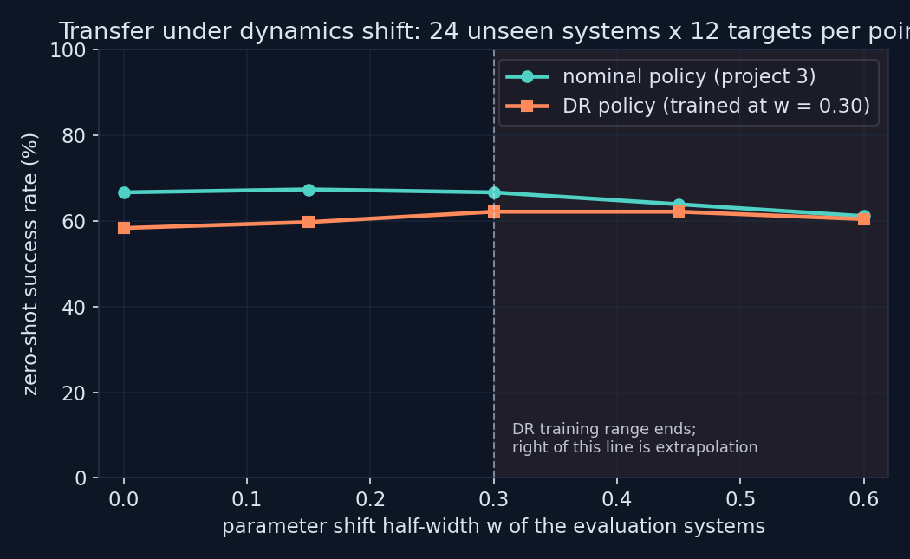
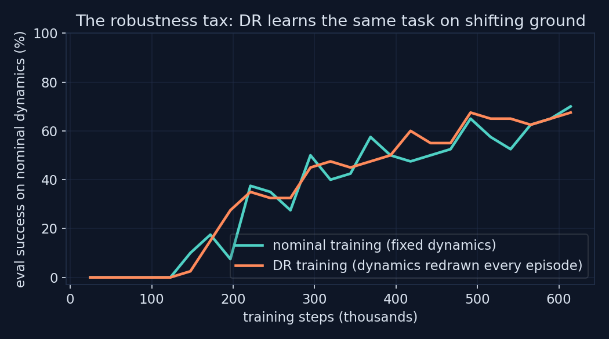

0
CROSSOVER POINTS
Project 1 identified this arm's parameters to about one percent, but hardware drifts: lubrication, temperature, payload, supply voltage. This project builds the controlled experiment that answers whether a policy trained on the nominal model survives that drift, and whether randomizing training dynamics buys robustness. The answer here is no and no, and the negative result is the finding: the physics already told the controller what DR was trying to teach it.
Two policies, identical PPO budget, hyperparameters, network, and seeds. The nominal policy is exactly project 3's shaped policy, trained on fixed dynamics. The DR policy trains with parameters redrawn every episode: joint damping, dry friction, and payload mass scaled by a uniform factor of half-width w = 0.30, actuator gear by half that width, on the reasoning that drives are usually better characterized than joints.
Levels above 0.30 sit outside the DR training range, so the right side of the sweep measures extrapolation, not memorized robustness. Everything is seeded: both policies face byte-identical evaluation conditions, and every number below comes from 288 episodes per cell.

| Shift w | Nominal policy | DR policy | Regime |
|---|---|---|---|
| 0.00 | 66.7% | 58.3% | training dynamics |
| 0.15 | 67.4% | 59.7% | inside DR range |
| 0.30 | 66.7% | 62.2% | edge of DR range |
| 0.45 | 63.9% | 62.2% | extrapolation |
| 0.60 | 61.1% | 60.4% | extrapolation |
The nominal policy loses 5.6 points across a sweep that reaches double the DR training range, about 1.4 standard errors for a difference of proportions at this sample size, which is weak evidence of any decline at all. The DR policy pays an 8.4 point tax on nominal dynamics, about two standard errors, closes the gap as shift grows, and never overtakes. Domain randomization bought nothing measurable here and cost real performance where the system actually lives.
A negative result is only worth publishing with its mechanism, and this one has a clean one. The platform runs model-based gravity compensation, and the engine computes it from the true simulated masses, so when evaluation randomizes the payload, the compensation tracks it automatically. The single largest parameter sensitivity in a gravity-loaded arm never reaches the policy at all. What remains is damping and friction variation, and a 50 Hz feedback policy observing position and velocity corrects those transients within the episode; a 30 to 60 percent change in damping alters how the arm approaches the target, not whether the closed loop can park it inside 25 mm in three seconds.
Randomize what the controller cannot already reject. Uncertainty that a lower-level loop compensates, gravity here, or that feedback absorbs, viscous effects here, is a poor DR target: the policy pays the variance cost of training on shifting ground and collects no robustness it did not already have. Sensitivity analysis before randomization is cheaper than 600 thousand steps of finding out.

One seed per policy, so the exact success percentages carry seed noise even though the within-table comparisons are matched-condition. The randomization covers the parameters project 1 identified, which is the point of the study, but not perception noise, latency, or unmodeled compliance, which are the usual reasons DR earns its keep on vision-based or contact-rich tasks. The claim is not that DR is useless; it is that on this system, over this parameter family, at this budget, it measurably was, and the harness that established that is exactly the harness that would show the opposite on a task where it is not.
pip install mujoco gymnasium stable-baselines3 numpy matplotlib
python src/train_p4.py # DR training + full transfer sweep
python src/make_figures.py # transfer and training-curve figures